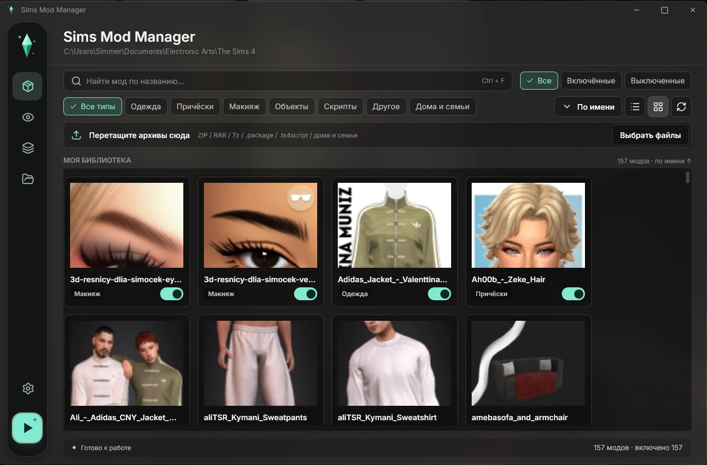
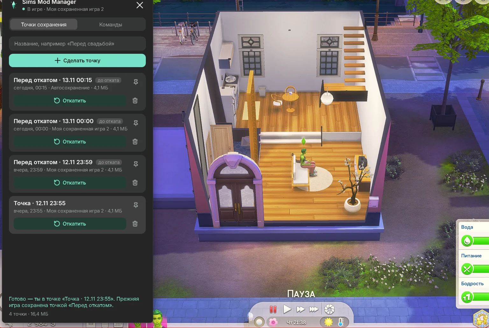
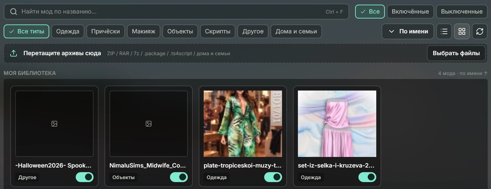
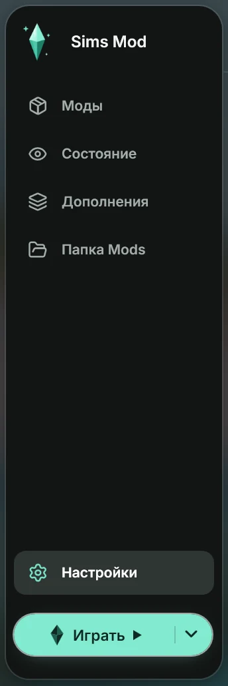
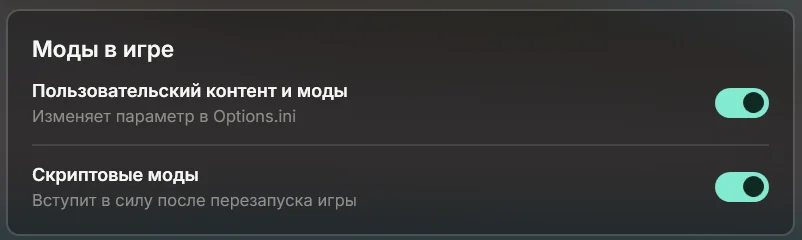

Works inside the game
An overlay on a hotkey: save points and rollback without leaving the game. A built-in helper mod saves the game and shows dialogs right in The Sims.
Installs mods from any archive, finds what crashed your game and rolls back your save right inside the game. Everything else is yours to tune.

Hundreds of cryptic file names, duplicates, old versions and archives nobody unpacked. Drag the slider to compare.
Press F9 and a panel slides in from the left. Make a save point before a wedding, a move or a cheat experiment — and come back to it whenever you like.

The game saves itself, and the copy is kept separately so your save list stays clean.
A wedding, a move, cheats — anything. Pin the points that matter.
Confirm in the game's own dialog and press Continue. Your current game is saved too.
A regular manager just sorts files. Sims Mod Manager also works inside the game, watches your mods and protects your saves.
An overlay on a hotkey: save points and rollback without leaving the game. A built-in helper mod saves the game and shows dialogs right in The Sims.
Zip, rar or 7z — it unpacks, puts every file where it belongs and shows what's new. Clothes, hair, objects and scripts each get their own tab.

Backs up your saves before every launch. Two clicks to start the game without mods or without scripts — to find the culprit fast.

Reads the game's crash reports, names the culprit and offers to turn it off. Mods and scripts switch on with one toggle — no editing Options.ini.

Hotkey, pause, save point rules, theme — even Boxy. Everything lives in the settings, no file editing. Try it right here.
That's only some of the settings — the app has more.
Yes. Windows shows this for any new app without a paid code-signing certificate. Click “More info”, then “Run anyway”. The source code is open on GitHub for anyone to check.
Not unless you ask. Fixes only turn mods off by moving them to a “Mods (disabled)” folder. One click turns them back on.
No. It's a separate window on top of the game: it doesn't hook into the game or touch its files. Use “Windowed Fullscreen” or “Windowed” display mode.
Yes. It finds the game on its own and launches it through the right launcher. If it can't, it asks once where the game is.
No. Everything runs on your computer with no sign-up. Internet is only used for app updates.
One point is about the size of the save itself — usually a few megabytes. You set limits by count, age or size in the settings.
Installs in a minute and updates itself. Boxy is already waiting and will be the first to tell you if a mod starts misbehaving.
Sims Mod Manager runs on Windows PCs. Copy the link and open it on your computer.